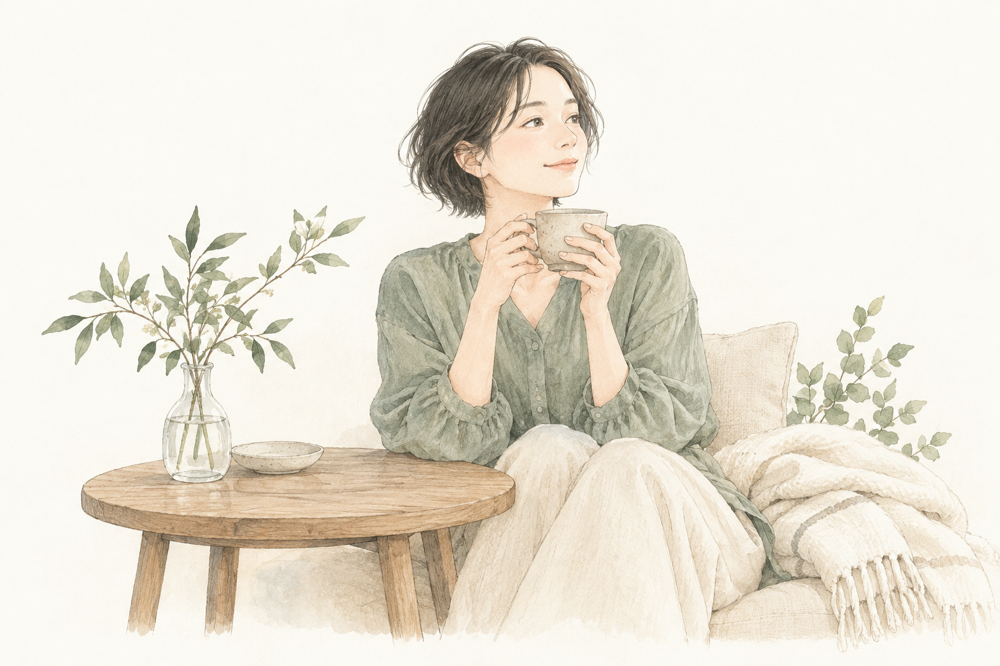
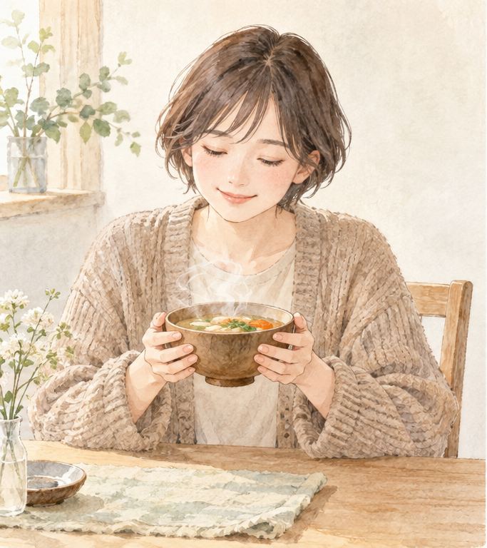

こころとからだを、ひとやすみ。
わたしを知って、
やさしく整える。
今のあなたに合う、小さなセルフケアを。
今日のわたしに

ひと呼吸、からだの声に耳をすます。
わたしのからだ セルフチェック
最近のわたしは、
どんな調子？
疲れや冷え、眠り、ストレス。
ここ1か月の自分を、ふり返ってみましょう。
約3分 ／ 全23問 ＋ 大切にしたいこと
いい・わるいをつけるチェックではありません。
- 01からだのこと15の質問
- 02眠りのこと8つの質問
- 03大切にしたいこと今の気持ちを選ぶ
※このチェックは医学的な診断ではなく、生活習慣や自覚症状をふり返るためのセルフチェックです。つらい症状が強いときや長く続くときは、医療機関に相談してください。
1 / 3
からだのチェック
最近の自分にいちばん近いものを選んでね。
2 / 3
睡眠のチェック
眠りについて、近いものを選んでね。
3 / 3
今、あなたが一番
大切にしたいことは？
いくつ選んでもOK。選ばなくても大丈夫です。
あなたのチェック結果

今のあなたは
まず、今日これをひとつ
この状態が続くと
放置する期間が長いほど、整うまでにも時間が必要になることがあります。今の状態を改善したい方へ詳しい診断結果を見るタイプ・睡眠・食材までわかります
🌿 メインタイプ
🌙 睡眠のこと
診断結果を、これからの暮らしへ
今のあなたに合う暮らしを、
まこと一緒に見つけませんか？
診断結果をもとに、無理なく続けられる整え方を一緒に考えます。テルミーも選択肢のひとつとして、必要に応じてご案内します。
初回相談は無料です
まずは公式LINEに「相談」と送ってください。
▼ 下の緑のボタンをタップ
診断→相談→実践→再診断
※このチェックは医学的な診断ではありません。紹介している食材は東洋医学的な考え方を含む参考情報で、食事の制限をおすすめするものではありません。症状が強いときや長く続くときは、医療機関に相談してください。